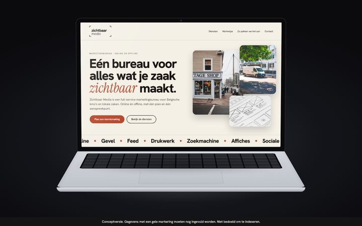
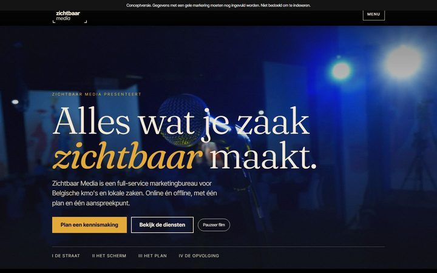
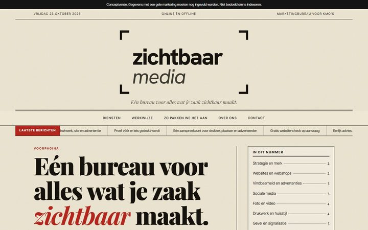
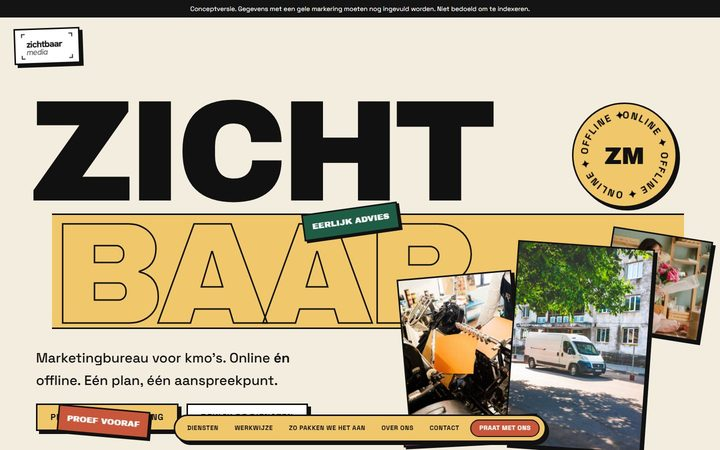
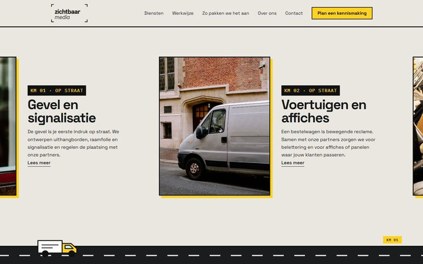
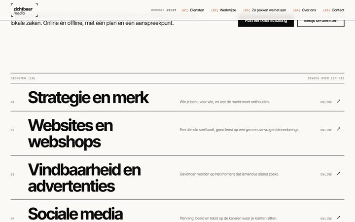
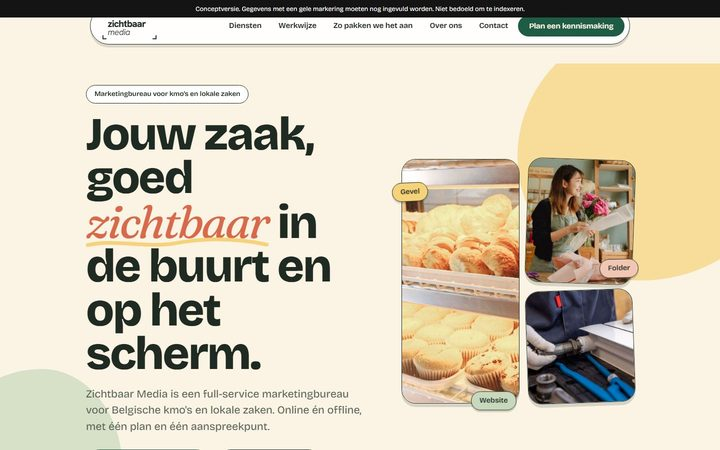
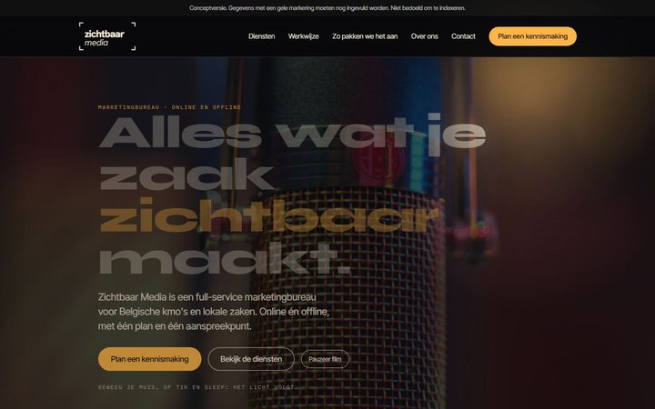
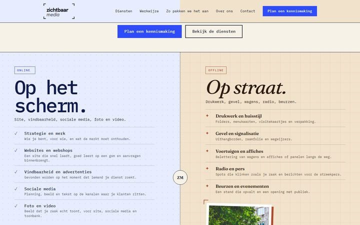
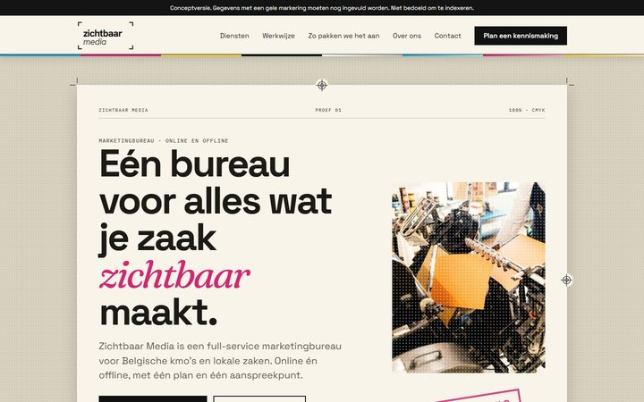

Elke richting is een andere kijk op dezelfde inhoud: een marketingbureau dat online én offline werkt. Open ze op een computer voor het volledige effect, en daarna ook op je gsm.
Alle teksten zijn eerlijk (geen verzonnen klanten, cijfers of prijzen). Foto’s en video komen uit rechtenvrije bronnen. Gele vakjes zijn gegevens die nog ingevuld moeten worden.

LaptopEen laptop gaat open en de zoom gaat over in de site.Wacht even: de laptop klapt vanzelf open en de zoom gaat over in de site. Scrollen slaat het over.
FilmzaalCinematografisch: film, hoofdstukken en een aftiteling met diensten.Open het menu rechtsboven en scroll: elk hoofdstuk schuift over het vorige.
KrantEen voorpagina met kolommen, rubrieken en kleine advertenties.Lees de voorpagina; de kop verschijnt woord voor woord.
AfficheReusachtige letters, harde kaders, stickers en tilted banners.Sleep de stickers en beweeg over de kaarten. Het menu zit onderaan.
StraatEen horizontale reis van de straat naar het scherm.Scroll naar beneden: de reis loopt zijwaarts en de bestelwagen rijdt mee.
IndexTypografisch en Zwitsers: een lijst met beeld dat de muis volgt.Beweeg je muis over de rijen met diensten.
BuurtWarm en afgerond, een bento van foto’s, vriendelijk en lokaal.Scroll en wijs de tegels aan.
ZaklampDonker: een lichtbundel onthult wat er te zien is.Beweeg je muis: het licht volgt. Op gsm sleep je met je vinger.
Twee kantenOnline en offline als twee helften met een schuifbalk.Wijs de linker of rechter helft aan en sleep de balk tussen straat en scherm.
DrukproefProefvellen met snijtekens, kleurbalk en een goedkeuringsstempel.Scroll: de proefvellen stapelen en onderaan valt een stempel.